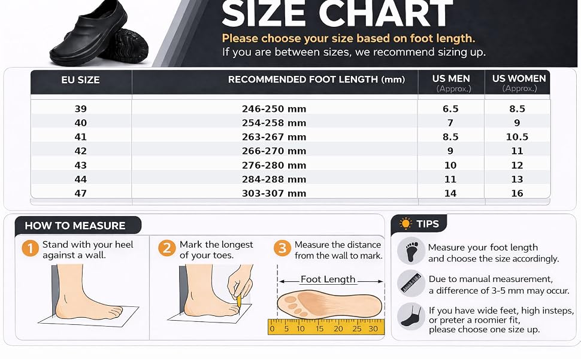

Find your fit.
Measure foot length before choosing a size. For wide feet or high insteps, consider choosing one size larger.

Fit guidance
Stand with your heel against a wall, mark the end of your longest toe, and measure the distance from the wall to the mark. A manual measurement difference of 3–5 mm may occur.
Stand with your heel against a wall, mark the end of your longest toe, and measure the distance from the wall to the mark. A manual measurement difference of 3–5 mm may occur.
Accessible size table
Size conversion
| EU size | Foot length | US Men (approx.) | US Women (approx.) |
|---|---|---|---|
| 39 | 246–250 mm | 6.5 | 8.5 |
| 40 | 254–258 mm | 7 | 9 |
| 41 | 263–267 mm | 8.5 | 10.5 |
| 42 | 266–270 mm | 9 | 11 |
| 43 | 276–280 mm | 10 | 12 |
| 44 | 284–288 mm | 11 | 13 |
| 47 | 303–307 mm | 14 | 16 |
Between sizes? Consider sizing up. Size availability is confirmed on the Amazon listing.
View on Amazon ↗